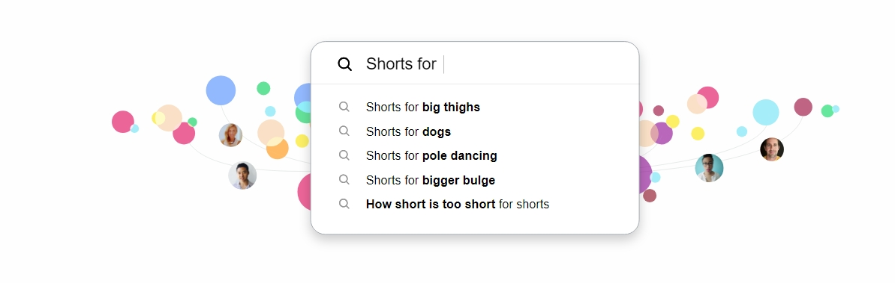
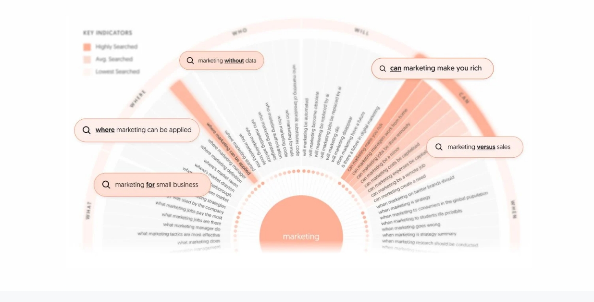

Узнайте, о чем люди спрашивают...
Используйте 1-2 слова для достижения наилучших результатов
Получайте мгновенные, необработанные результаты поиска напрямую от ваших клиентов
Каждый день Google обрабатывает 3 миллиарда поисковых запросов, и 20% из них никогда раньше не встречались. Это как получить прямую связь с мыслями ваших клиентов...
Иногда это «Как удалить замявшуюся бумагу». В других случаях это мучительные страхи и тайные желания, которыми они осмелились бы поделиться только с Google.
Откройте для себя неиспользованную Золотую жилу идей для контента
Audience Analyzer анализирует данные видеохостингов, и быстро выявляет все полезные фразы и вопросы, которые люди задают по вашему ключевому слову.
